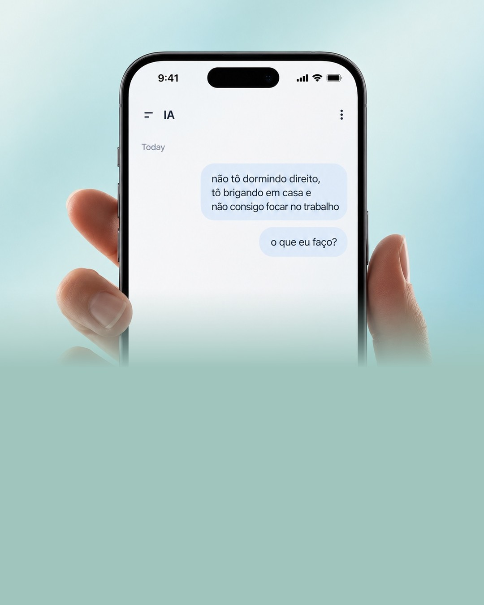

@fairhealth.br01/06
Hoje
IA digitando
7 em cada 10
brasileiros já perguntaram
a uma IA sobre a
própria saúde.
Fonte: Olá Doutor, pesquisa com 500 pessoas (2026)
O que isso diz sobre o cuidado no trabalho →
@fairhealth.br02/06
Por que uma IA?
Ela está lá quando
ninguém mais está.
31,2%
Está lá a
qualquer hora
26,2%
Custa
menos
14%
Não dá
vergonha
Motivos de quem usa IA para questões emocionais · Doctoralia, 3.903 usuários (2026)
Mas, numa crise forte
de ansiedade, só
4%
recorreriam primeiro a uma IA.
Na hora que pesa, a gente quer gente.
FOTO: conversa de escuta no Escritório do Cuidado.
Alguém do time de frente, atento, ouvindo; a outra pessoa
de costas ou só as mãos. Luz natural, horizontal (1080x480).
@fairhealth.br03/06
01
Escuta
Todo mundo quer ser
ouvido de verdade.
No Escritório do Cuidado, a primeira consulta começa por uma pergunta: o que importa para você? Turno, casa, sono e a conta do mês entram na conversa. Sem julgamento, e com sigilo.
Conhece quem cuida das pessoas na sua empresa?
Mande este post para essa pessoa.
@fairhealth.br04/06
02
Por perto
Ninguém quer perder
meio dia por uma consulta.
FOTO: colaborador no
posto de trabalho
(fábrica ou escritório),
em plano médio, sem
logo de empresa.
Vertical (368x520).
Médico, psicólogo e assistente social ficam dentro da empresa, a poucos passos de quem trabalha, presencial ou remoto.
A dúvida chega a um profissional antes de virar remédio.
Remédio sem indicação e exame sem necessidade fazem mal. Na medicina, esse dano tem nome: iatrogenia. No trabalho, ele vira atestado e falta.
@fairhealth.br05/06
03
Plano
e retorno
FOTO: rotina possível.
Prato simples e colorido,
ou agenda com metas
escritas à mão. Tons claros
(448x360).
Uma resposta
não é um plano.
No Escritório do Cuidado, o plano é combinado com a pessoa, tem base na Medicina do Estilo de Vida e é revisto a cada retorno. Cada um recebe o cuidado de que precisa: sem remédio a mais nem exame à toa.
−28%
de absenteísmo com programas de saúde preventiva
Fonte: Harvard Business Review, 2022
@fairhealth.br06/06
o que eu faço?
Quando alguém do seu
time perguntar isso,
que a resposta
venha de gente.
Escuta, cuidado por perto e um plano com retorno: é isso que o Escritório do Cuidado leva para dentro da empresa.
Comente CUIDADO
e enviamos na DM como funciona o diagnóstico gratuito.
Na quarta: quatro frentes, um cuidado conectado.
 @fairhealth.br
@fairhealth.br